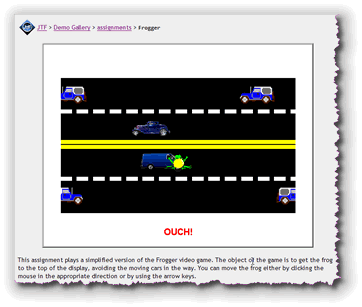
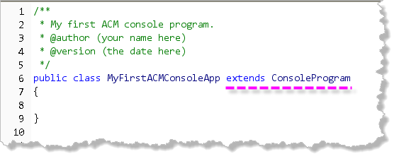
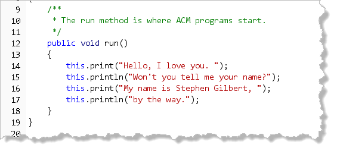
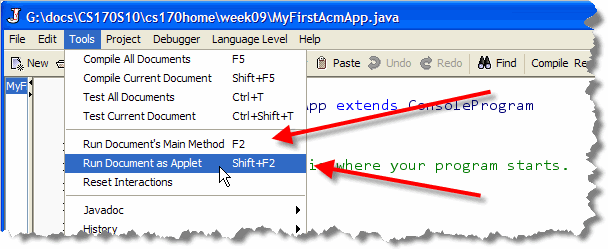
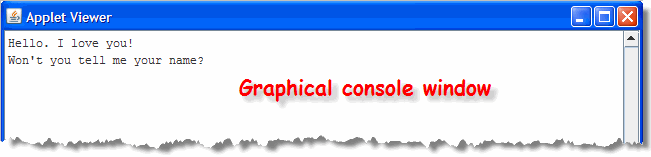
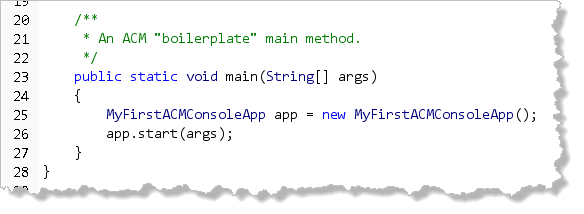

Today, Java is the most popular language for teaching computer science, especially for introductory classes like CS 170. In 2003-2004, the College Board moved the Advanced Placement Computer Science program to Java, from C++. Most universities, (UCI, Berkeley, Stanford, etc.) use Java for at least some, (if not the majority), of their courses.Many schools, though, have discovered that Java, which was designed with the commercial marketplace in mind, isn't really ideal for teaching beginning programmers the fundamental concepts they'll need to master. Specifically, instructors have complained that Java is too complex, and too unstable.
Responding to these complaints, the Education Board of the Association for Computing Machinery, (ACM), set up the ACM Java Task Force (JTF) in Fall 2003, and charged them with the task of:
- reviewing the Java language, APIs, and tools from the perspective of introductory computing education.
- developing a stable collection of pedagogical resources to make it easier to teach Java to first-year computing students without having those students overwhelmed by its complexity.
Under the leadership of Eric Roberts from Stanford, the JTF released the first version of the ACM libraries in February 2005. We'll be using version 2.0 in this class, maintained on Roberts' Stanford Web site. As we go through the semester, I'll show you how to use these libraries to create some interesting programs. We'll start, though, by looking at the ACM program package of classes.
What is the ACM?
"The ACM, the Association for Computing
Machinery, is an international scientific and educational organization
dedicated to advancing the arts, sciences, and applications of
information technology. With a world-wide membership of more than 80,0000,
ACM is a leading resource for computing professionals and students
working in the various fields of Information Technology, and for
interpreting the impact of information technology on society."
Visit the ACM Web site,
http://www.acm.org for more information, or to join up.
Student memberships start at about $20 a year.
The ACM Program Classes
When you first start programming in Java,
there are certain concepts
that are fairly natural and easy to explain, and others that are
difficult to grasp, even after you are fairly proficient in the
language. One of those difficult-to-grasp topics is the fact that
Java doesn't have a separate facility for programs.
Instead, you can stick a main() method into any class,
and turn that class into a program. That's what we did in the last
chapter.
When you add a main() method to a class, though,
that class doesn't really turn into a program. The
main() method can't access any of the instance
variables in the class, or call any of the regular (non static)
methods; it's really a very awkward mechanism, that isn't
at all object-oriented.
Applets, on the other hand, are very object-oriented: your browser creates an instance of your class. All of the methods you write have access to both the class instance variables and to the other methods in the class. The problem with applets, though, is that you have to run them through a Web browser and have to create an extra source file, the HTML page that loads the applet.
"Wouldn't it be nice", the JTF folks said, "if we could have programs that were as simple as applets, and that worked when run as both an application and as an applet?"
The ACM program classes, shown here, do just that:
 This hierarchy of classes allows you to easily write programs
that can be run both as applets, and as applications. Also, by
changing just one line of code, you can change the "input style"
from console-mode to dialog-based. (You can
read the documentation for all of the
classes in the ACM Library on the
Java Task Force Web site.)
This hierarchy of classes allows you to easily write programs
that can be run both as applets, and as applications. Also, by
changing just one line of code, you can change the "input style"
from console-mode to dialog-based. (You can
read the documentation for all of the
classes in the ACM Library on the
Java Task Force Web site.)
External Libraries
When you write a traditional console program, much of the code
that your program uses is contained in collections of classes
known as libraries. When you write System.out.println(),
for instance, the code for the System class and
the code for the PrintStream class is located
in a library. In Java, these different libraries are placed in special zip files
known as Java Archives or JAR files. The standard
Java classes are available as part of the JRE.
The Classpath
Internally, Java uses something called the classpath (or build path) to know which libraries or folders to search for additional classes. DrJava takes care of this for you when you use only the classes available with the JRE.
When you use additional library classes (like we'll do with the ACM JTF class libraries this week), you have to let DrJava "know" about this additional code. Normally, to do this, you can add the file containing the library to DrJava's Extra Classpath setting in the Preferences window. For this class, though, I've included the ACM library code inside the customized OCDJ.jar version of DrJava that we're using for CS 170. That way you don't have to do anything extra to create ACM programs.
ACM Console Programs
ACM console programs have almost exactly the same organization as the traditional console programs you wrote in the last section. To see what the differences are I'll "recreate" your first console application as a simple ACM program named MyFirstACMConsoleApp. If you want, you can open Drjava and follow along, but I won't collect this program.
The Class Header
The class header for MyFirstACMConsoleApp, on line 6 in the screenshot below, looks like this:

As you can see, the only difference between this class, and the traditional console program, MyFirstConsoleProgram, that you saw in the last chapter, is the last phrase,extends ConsoleProgram.
You already met the extends keyword when you looked
at the Applet class in Chapter 1.
As you'll recall,
the extends keyword means that what
precedes it (in this case the public class MyFirstACMConsoleApp),
adds something to, or builds upon, what follows it
(in this case, something called ConsoleProgram).
The real question is, "What's a ConsoleProgram, and
where does it come from?"
 Like
Like Applet, ConsoleProgram is a class,
but instead of being part of the built-in JRE System classes,
it is one of the classes supplied with the ACM Class
Libraries. As you can see from the Javadocs, the
fully qualified name of this class is:
acm.program.ConsoleProgram.
In Java, you recall, a package describes the "place"
where the specific class we want to use is stored. In this case,
the ConsoleProgram class is in the package,
acm.program. These classes are physically stored
in the archive (or zip) file, acm.jar. In our case,
they have been incorporated into the DrJava JAR file, so
that DrJava can locate the class
when it goes looking for a package it needs.
Import Statements Again
Since we told the compiler that MyFirstACMConsoleApp
extends ConsoleProgram, we must also tell it
where to find
the ConsoleProgram class. We could do that
explicitly by writing:
public class MyFirstACMConsoleApp extends acm.program.ConsoleProgram
but that would be kind of tedious. Instead, we can just add this
line to the top of our class file:
 Now, when the Java compiler encounters the name
Now, when the Java compiler encounters the name
ConsoleProgram,
it will look first in the acm.program package to locate the
class. If it can't find it there, then it issues an error.
This particular form of the import statement is called a
wildcard import because it makes all of the classes in
the package accessible to your program. Instead, you could use a
specific import statement like this:
import acm.program.ConsoleProgram;
to make sure that only the ConsoleProgram was imported. Many
programmers prefer to use specific rather than wildcard imports. However,
if your program uses a lot of classes from the same package, it does
make the import section of your program fairly large.
The run() Method
Instead of a main() method, ACM console programs
use a simpler run() method as the program starting point:

Notice that therun() method (unlike the main()
method in a traditional console program):
- does not use the
staticmodifier. - does not have any parameters, like
String[] argsin themain()method parameter list.
You may have also noticed that the statements inside the
run() method look a little different than those
from MyFirstConsoleProgram. Let's look at that now.
ACM Console Output
 In ACM console programs, you don't use the
traditional
In ACM console programs, you don't use the
traditional System.out object to write your
output, since System.out prints to the
system console, while ACM programs write to a
graphical console, which uses an independent window, and
which can be displayed as an applet in a Web page.
To display text output in ACM console programs, each program
comes with an IOConsole object that knows how to
do both input and output. Instead
of using one object for input and a different one for output,
ACM console programs can use a single object for both purposes.
In fact, though, ACM programs make things even easier. Instead
of using the IOConsole class, the ConsoleProgram
class itself also has methods for both input and output, so
you don't need to use a separate I/O object at all, you can just
ask your "program object" to do the printing for you. To use the
"currently executing object" as the receiver for your message,
just use the keyword this.
All of the ACM Program classes have two methods for sending output to the console:
void print(any-type parameter)
void println(any-type parameter)
Printing Methods
These two methods work just like the print()
and println() methods from System.out
except that you can use this instead of
System.out as the receiver. In fact, though,
you don't need to precede them with anything at all.
If you don't supply a receiver when calling a method, then
this is assumed automatically.
That means, you can just write
either print() or println(),
passing the method a single parameter, which can be of
(almost) any kind or type. The parameter (or argument)
that you pass is converted to a "human-readable" text format,
called a String, and then displayed on the program's
console window.
Here's and example that uses both print()
and println():
print("I am ");
print(59);
println(" years old.");
Just as with System.out, the difference between
print() and println(),
is that println() adds a newline to the
end of its output, so that the next time you use
print() or println(), the new output
appears at the beginning of the following line.
You can also call
println() with no arguments, if you just want to
add a "blank" line on the console.
Running ACM Programs as Applets
Because ACM programs are both applications and
applets, you have a choice when you run them.

If you choose Run Document as Applet, then you'll see something like this:
The ACM Program main() Method
When you run an ACM program from inside DrJava, the IDE does some extra
work that allows the Program class main() method
to run your code. Remember, all Java applications
(but not applets), must define one method named main().
If you want to run an ACM ConsolePrograms outside
of DrJava, you can add your own main() method, in addition
to the regular ACM run() method. Here's what the
structure of the ACM main() method looks like:

While the ACMmain() method header is exactly the
same as every main() method you've seen up
until now, the statements in the body are quite
a bit different. Instead of carrying out actions,
(like printing or reading user input), it simply:
- creates a program "object" using its constructor
- then tells the program object to
start()running.
Every ACM program (that you want to run as an application outside of DrJava),
will have this same basic structure. You'll just change the
name of the class. If you want to run only as an applet, or, if
you want to use it inside DrJava, then you don't need the
main() method.
Problems with main()
If you're a conscientious student comparing the code you see in MyFirstConsoleProgram with the code you see here, you're probably thinking:
Why does MyFirstACMConsoleApp
look SOOO different?
Instead of creating a "program object" and
then telling that object to start running, simple console programs
put all of the program statements into the main()
method itself. Much simpler, huh?
Well, not exactly. One difficult-to-grasp Java topic is the
fact that Java doesn't have a separate facility for
programs. Instead, you can stick a main() method
into any class, and turn that class into a program, (kind of). That
is what many textbooks do.
When you add a main() method to a class, though,
that class doesn't really turn into a program. The
main() method can't access any of the data elements
(instance variables) in the class, or call any of the regular
(non static) methods; it's really a very awkward
mechanism, that isn't at all object-oriented.
Applets, and ACM programs on the other hand, are very object-oriented. With an applet, your browser creates an instance of your class. All of the methods you write have access to both the class instance variables and to the other methods in the class. With the ACM program classes we get the best of both worlds: simple input and output in a graphical console window.

ACM Console Program Summary
- The Association for Computing Machinery (ACM) is the leading international academic, scientific and professional organization for computing professionals and computing education.
- The ACM's 2003 Java Task Force under the leadership of Stanford's Eric Roberts, created a library of classes designed for university students learning Java.
- To use an external library, like the ACM classes, you need to add them to your JVM classpath. (Our customized version of DrJava has this done already.)
- To write an ACM console program, you must
importthe classes in theacm.programpackage, andextendtheConsoleProgramclass. - Instead of writing a
main()method, put your code inside arun()method. The method does not need to bestaticand you do not need to declare aString[] argsparameter. - Instead of using
System.out.print()to display data, you can writethis.print("data")to use your program itself as the receiver of yourprintrequest. - If you like, when sending messages to the currently active
object (
this), you may omit the receiver and simply call the method directly, likeprint("data");. - You may add a
main()method to your ACM program, but this is only necessary if you wish to run it outside the DrJava environment. The ACM programs in this book won't include amain()method. - You can run your ACM programs inside their own graphical window, or run them as applets, which can be embedded in a Web page.